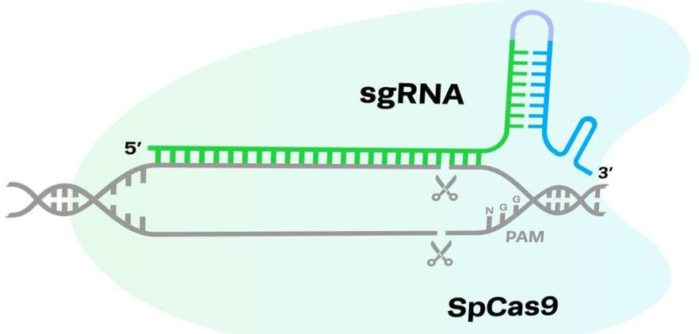
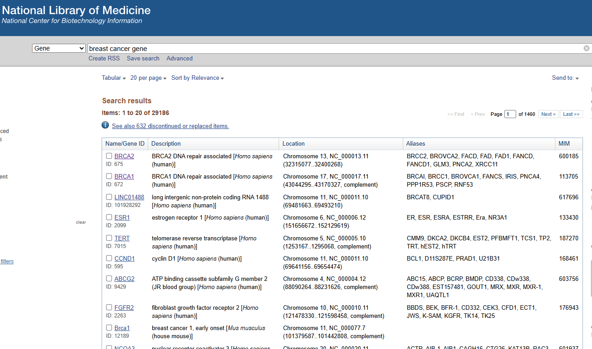
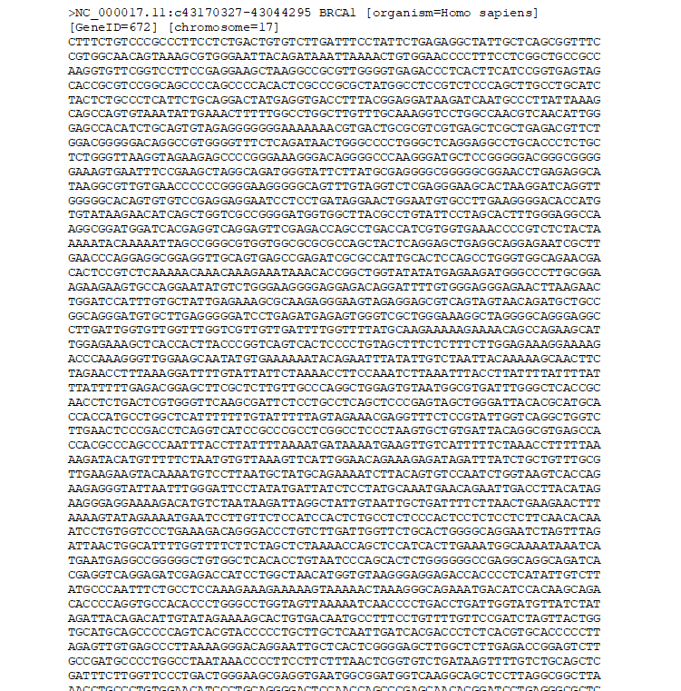
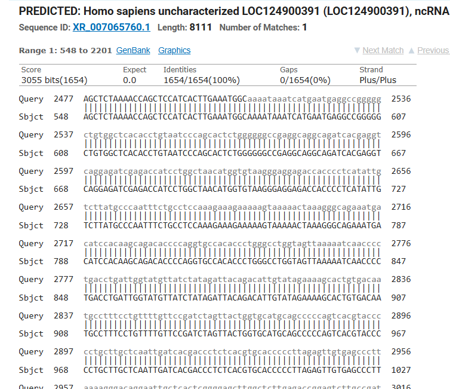
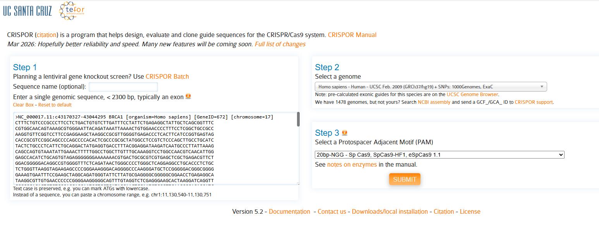
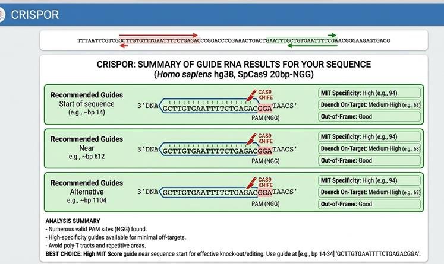
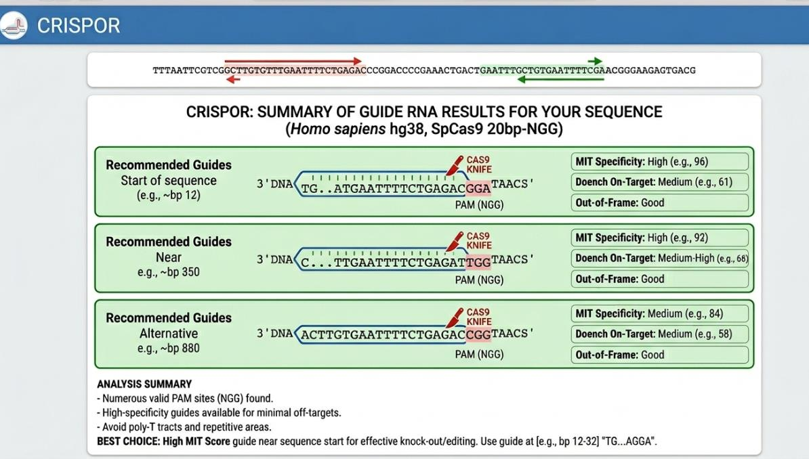

Применение CRISPR-Cas9 для изучения генов рака молочной железы
Аннотация
Данное исследование описывает возможность и способ редактирования генома с помощью технологии CRISPR-Cas9, её преимущества и недостатки. Приведенная в научной работе технология открывает возможности развития персонализированной медицины.
Исследование
Медицина и биология
18.08.2026
Русский
Введение
Рак молочной железы занимает одно из ведущих мест среди онкологических заболеваний у женщин по всему миру. Его возникновение обусловлено накоплением как генетических, так и эпигенетических нарушений, затрагивающих гены, регулирующие пролиферацию, дифференцировку и программируемую клеточную гибель. К наиболее распространенным генам, связанным с этим заболеванием, относятся BRCA1, BRCA2, TP53 и ряд других; их мутации существенно увеличивают вероятность развития опухолевого процесса [1].
Технология CRISPR-Cas9 представляет собой инструмент геномного редактирования, основанный на использовании направляющей РНК (sgRNA), которая обеспечивает точное распознавание целевой последовательности ДНК, и нуклеазы Cas9, осуществляющей разрыв двойной спирали в заданной области [2,4]. После этого активируются клеточные механизмы репарации, позволяющие целенаправленно изменять генетический материал — удалять, вставлять или модифицировать отдельные участки генома [5].
Ключевым этапом подобных исследований является биоинформатическая обработка нуклеотидных последовательностей, которая даёт возможность определить перспективные мишени для редактирования и разработать высокоэффективные направляющие РНК [6].
Актуальность данной работы обусловлена высокой распространённостью рака молочной железы и необходимостью более глубокого понимания генетических механизмов его развития. Использование технологии редактирования генома CRISPR-Cas9 значительно ускоряет исследования в области функциональной геномики и способствует развитию персонализированной медицины [8].
Проблема: недостаточная изученность функций отдельных генов, вовлечённых в развитие рака молочной железы, и необходимость применения современных методов редактирования генома с использованием биоинформатического анализа.
Цель работы: определить гены, связанные с раком молочной железы, и смоделировать направленное редактирование этих генов с использованием технологии CRISPR-Cas9.
Задачи:
- Найти гены, связанные с развитием рака молочной железы.
- Проанализировать нуклеотидную последовательность выбранных генов.
- Определить участки, подходящие для редактирования системой CRISPR-Cas9.
- Подобрать направляющую РНК (sgRNA) с помощью биоинформатического сервиса.
1.Теоретическая часть
1.1 Рак молочной железы и его распространение
Рак молочной железы (РМЖ) — это злокачественная опухоль, возникающая из эпителиальной ткани (протоков или долек) молочной железы. Это системное заболевание, склонное к агрессивному росту и метастазированию — распространению раковых клеток через лимфатическую и кровеносную системы в отдаленные органы (кости, легкие, печень, головной мозг). В онкологической практике РМЖ классифицируется не только по стадиям (от I до IV), но и по молекулярно-биологическим типам, которые определяют, насколько опухоль чувствительна к гормонам или специфическим белкам (BRCA1) [1].
Основными причинами развития РМЖ являются генетическая предрасположенность (в том числе мутации BRCA1 и BRCA2), длительное воздействие эстрогенов, связанное с особенностями репродуктивной жизни, а также возраст старше 40–50 лет. Существенную роль играют факторы образа жизни, такие как ожирение, низкая физическая активность, употребление алкоголя и курение. Дополнительно риск повышают воздействие ионизирующего излучения и наличие пролиферативных заболеваний молочной железы [7].
Симптоматика РМЖ классифицируется на локальные проявления в области молочной железы и регионарные изменения лимфатического аппарата. На ранних стадиях заболевание может протекать практически бессимптомно, однако иногда появляются незначительная боль или чувство дискомфорта в молочной железе, ощущение тяжести или распирания. Возможны патологические выделения из соска (серозные, кровянистые или гнойные), особенно если они односторонние и возникают спонтанно[1,7].
Клинические признаки рака молочной железы при осмотре и пальпации проявляются в виде плотного, безболезненного узлового образования с нечеткими контурами, часто описываемого как «каменистый» конгломерат. Кожа над таким узлом теряет эластичность и не собирается в складку (симптом площадки), может наблюдаться её локальное втяжение вследствие натяжения куперовых связок (симптом умбиликации), а также отёк с расширением пор, придающий вид «лимонной корки» из-за лимфостаза. В некоторых случаях отмечаются гиперемия и инфильтрация тканей, что может напоминать маститоподобные формы заболевания. Дополнительно выявляются изменения соска — его деформация, смещение, фиксация или втяжение. Нередко определяется лимфаденопатия: увеличение и уплотнение подмышечных лимфатических узлов. [7]
Рост заболеваемости обусловлен старением населения и социальноэкономическими факторами. На сегодня рак молочной железы (РМЖ) стал самой распространенной онкопатологией в мире, опередив рак легких [9].
По данным ВОЗ, среди женщин - это наиболее часто диагностируемый вид рака и одна из главных причин смертности от злокачественных новообразований. Ежегодно в мире выявляется более 2,3 млн новых случаев, что делает его самым частым видом рака среди женщин. По уровню смертности он занимает одно из ведущих мест — около 680–700 тыс. смертей в год [12].
Существует выраженная диспропорция между уровнем экономического развития стран и эпидемиологическими показателями. В промышленно развитых государствах (страны Западной Европы, Северной Америки и Австралии) отмечаются наиболее высокие уровни выявляемости. Это связывают с широким распространением гормональных факторов риска (раннее начало менструаций, поздние первые роды, краткосрочное грудное вскармливание), особенностями образа жизни (низкая физическая активность, избыточный вес), а также эффективностью систем маммографического скрининга [9].
В развивающихся странах, напротив, при более низком уровне первичной заболеваемости фиксируются значительно более высокие показатели смертности, что указывает на проблемы с доступностью своевременной диагностики и высокотехнологичного лечения [9].
Среди стран СНГ низкий уровень заболеваемости РМЖ характерен для республик Средней Азии: в пределах от 20,4% (Таджикистан) до 27,3% (Киргизия); высокий в Прибалтике (48,7-52,1%), Армении (74,1%) [12].
В Казахстане заболеваемость РМЖ заметно различается по регионам: например, в 2018 году самые высокие показатели были в Северо-Казахстанской области (43,6%), а самые низкие — в Туркестанской области (8,2%) [9].
Как и во всём мире, уровень заболеваемости сильно зависит от возраста. В среднем пациенткам около 55 лет, что соответствует данным по другим регионам страны: от 55,7 лет в Атырауской области до 62,4 лет в Алматинской области [12].
Важно учитывать, что возраст особенно значим при метастатической форме рака молочной железы — она протекает более агрессивно по сравнению с неметастатическими формами заболевания [7].
1.2. Гены, ассоциированные с раком молочной железы
Биологическая значимость гена BRCA1
Ген BRCA1, локализованный в длинном плече 17-й хромосомы (17q21), кодирует белок, ответственный за поддержание стабильности генома. Ген участвует в восстановлении повреждений ДНК (особенно двуцепочечных разрывов), контролирует клеточный цикл и предотвращает накопление генетических ошибок, поэтому относится к генам-супрессорам опухолей. При его нормальной работе риск развития злокачественных опухолей, включая Рак молочной железы, значительно снижается. Мутации в гене BRCA1 могут возникать по разным причинам. Чаще всего они являются наследственными и передаются от родителей как «поломанный» вариант гена. Также мутации могут появляться спонтанно в течение жизни из-за ошибок при копировании ДНК в процессе деления клеток. Дополнительными факторами, повышающими вероятность повреждений ДНК, являются воздействие ионизирующего излучения, некоторые химические вещества, а также накопление естественных возрастных изменений в клетках [1].
Ген BRCA1 является крупным и сложным по структуре, однако распределение патогенных вариантов в нем не является равномерным. Выделяют несколько ключевых зон:
- Экзон 11: самый крупный экзон гена (составляет около 60% всей кодирующей последовательности). Именно здесь локализуется большая часть известных патогенных мутаций.
- Домен RING (на N-конце, 1–109 аминокислот) является важной частью белка. Он обеспечивает его функцию как фермента, участвующего в разрушении повреждённых белков, а также взаимодействует с белком BARD1, что необходимо для нормальной работы и стабильности BRCA1. Мутации в этом участке опасны, так как нарушают эти функции и повышают риск развития РМЖ.
- Домены BRCT (C-конец): Расположены в районе 1646–1859 аминокислотных остатков. Эти участки отвечают за фосфопротеинсвязывающую активность, участвуя в контрольных процессах клеточного цикла и ответе на повреждения ДНК [1,7].
Для казахстанской популяции, где средний возраст пациенток с метастатическими формами составляет около 55 лет, раннее выявление BRCA-статуса является критическим звеном. Это связано с тем, что семейные формы рака зачастую развиваются раньше среднепопуляционных значений, а наличие метастазов у таких больных делает процесс практически неизлечимым на текущем этапе развития онкологии [9].
Также важно отметить, что мутации BRCA1 значительно повышают пожизненный риск рака: у носителей он может достигать до 60–80% для рака молочной железы и до 40–50% для рака яичников. Именно поэтому носители таких мутаций относятся к группе высокого онкологического риска и нуждаются в регулярном наблюдении и скрининге [12].
Биологическая значимость гена BRCA2
Ген BRCA2 (локализованный в хромосоме 13q12.3), как и BRCA1, является важным геном-супрессором опухолей и участвует в репарации ДНК через механизм гомологичной рекомбинации. Однако он имеет ряд клиникобиологических особенностей [8].
Мутации в BRCA2 ассоциированы с высоким пожизненным риском развития РМЖ (примерно 45–70%), а также рака яичников (до 17%), поджелудочной железы и простаты. В отличие от BRCA1, опухоли при BRCA2 чаще имеют гормонозависимый характер, что определяет их более выраженную чувствительность к гормональной терапии [7].
BRCA2 наследуется по аутосомно-доминантному типу и имеет важное значение для онкологического скрининга, включая необходимость регулярного наблюдения и проведения МРТ, особенно у пациенток из групп высокого риска. Также носители мутации имеют повышенную вероятность развития контралатерального рака молочной железы, что требует пожизненного мониторинга [7].
Клинически важной особенностью является высокая чувствительность опухолей с мутацией BRCA2 к PARP-ингибиторам и препаратам платины, что расширяет возможности таргетной терапии. Кроме того, при таких опухолях чаще наблюдается относительно более позднее метастазирование по сравнению с BRCA1-ассоциированными формами, однако при прогрессировании заболевание остаётся системным и требует длительного лечения [8].
Дополнительно отмечается, что BRCA2 играет ключевую роль в стабилизации репликационных вилок ДНК, и его инактивация приводит к выраженной геномной нестабильности, что ускоряет накопление вторичных мутаций и опухолевую прогрессию [8].
1.3 Технология CRISPR-Cas9 и механизм ее работы
CRISPR-Cas9 — это современная технология редактирования генома, позволяющая целенаправленно изменять последовательность ДНК в клетках живых организмов. Она была заимствована из естественной системы защиты бактерий от вирусов и адаптирована для использования в биомедицинских исследованиях и генной инженерии [2].
Система CRISPR-Cas9 включает два ключевых компонента: нуклеазу Cas9 — фермент, способный разрезать двухцепочечную ДНК, и направляющую РНК (sgRNA), представляющую собой короткую синтетическую молекулу, определяющую точность редактирования. В составе sgRNA имеется участок длиной около 20 нуклеотидов, комплементарный целевой последовательности ДНК. После связывания с соответствующим участком генома Cas9 осуществляет двуцепочечный разрыв ДНК. В ответ на это активируются клеточные механизмы репарации: негомологичное соединение концов (NHEJ), которое происходит быстро, но неточно и часто приводит к вставкам или делециям, вызывая сдвиг рамки считывания и инактивацию гена, а также гомологично направленная репарация (HDR) — более точный процесс, позволяющий вносить заданные изменения при наличии матрицы ДНК [4]. (Рис.1).

Рис.1 Механизм действия CRISPR-Cas9
Важную роль в работе системы играет PAM-последовательность (protospacer adjacent motif) — короткий участок ДНК, необходимый для распознавания цели ферментом Cas9. Для широко используемого фермента Streptococcus pyogenes Cas9 (SpCas9) PAM имеет вид NGG, где N может быть любым нуклеотидом. Эта последовательность служит сигналом для связывания Cas9 с ДНК, позволяет различать «свою» и «чужую» ДНК у бактерий и повышает специфичность редактирования. При отсутствии PAM Cas9 не сможет разрезать ДНК даже при полной комплементарности sgRNA целевой последовательности [2].
Направляющая РНК является ключевым элементом системы, обеспечивающим её точность. Она представляет собой гибрид crRNA и tracrRNA, распознаёт целевую последовательность, направляет Cas9 к месту разреза и отвечает за специфичность редактирования. При её проектировании учитываются уникальность последовательности для минимизации внецелевых эффектов, наличие PAM рядом с мишенью, GC-состав и вторичная структура, а также положение в гене, например начало кодирующей области для достижения нокаута[4].
Технология CRISPR-Cas9 широко применяется в онкологических исследованиях, включая изучение рака молочной железы. Она позволяет проводить функциональный анализ генов путём их «выключения» и изучения их роли в опухолевом процессе, например для генов BRCA1 и BRCA2, участвующих в репарации ДНК и связанных с повышенным риском развития заболевания. Кроме того, CRISPR используется для создания клеточных и животных моделей с конкретными мутациями, что помогает исследовать механизмы опухолевой трансформации, метастазирования и лекарственной устойчивости. С помощью CRISPRскрининга выявляют гены, критически важные для выживания опухолевых клеток, что открывает перспективы для разработки новых терапевтических мишеней. Также технология применяется при разработке методов лечения, включая редактирование иммунных клеток, создание более эффективных CAR-T клеток и потенциальное исправление генетических мутаций в рамках персонализированной терапии [4].
Среди преимуществ CRISPR-Cas9 можно выделить высокую точность и специфичность, простоту конструирования направляющей РНК, универсальность применения и высокую эффективность редактирования. В то же время технология имеет ряд ограничений, таких как риск внецелевых мутаций, зависимость от наличия PAMпоследовательности, ограниченная эффективность, а также существующие этические и клинические ограничения [6].
1.4 Применение CRISPR Cas9 в онкологии
Технология CRISPR-Cas9 широко применяется в онкологических исследованиях, включая изучение рака молочной железы, поскольку позволяет проводить функциональный анализ генов путём их целенаправленного «выключения» и изучения их роли в опухолевом процессе, в частности для генов BRCA1 и BRCA2, участвующих в репарации ДНК и связанных с повышенным риском развития заболевания. Кроме того, данная система используется для создания клеточных и животных моделей с заданными мутациями, что даёт возможность исследовать механизмы опухолевой трансформации, метастазирования и формирования лекарственной устойчивости. С помощью CRISPR-скрининга выявляются гены, критически важные для выживания опухолевых клеток, что открывает перспективы для поиска и разработки новых терапевтических мишеней [8].
В онкологии CRISPR-Cas9 также применяется для прецизионного редактирования генома с целью нокаута онкогенов, ответственных за пролиферацию опухолевых клеток, а также для коррекции мутаций в генах-супрессорах опухолевого роста. Технология активно используется в адаптивной иммунотерапии, в частности при создании CAR-T клеток, где с помощью генетического редактирования удаляются рецепторы, такие как PD-1, препятствующие эффективному распознаванию опухоли иммунной системой, что способствует усилению противоопухолевого ответа, в том числе против солидных опухолей [11].
Помимо терапевтического применения, CRISPR-Cas9 служит мощным инструментом функционального скрининга для идентификации новых мишеней и моделирования механизмов лекарственной резистентности в лабораторных исследованиях [11].
В клинической практике эта технология проходит этапы тестирования для лечения гематологических новообразований, а также для повышения специфичности цитотоксического воздействия за счёт точечного влияния на драйверные мутации, что позволяет минимизировать повреждение здоровых тканей[8].
II. Практическая часть
2.1 Методы исследования
Для проведения практической части использовались следующие инструменты биоинформатического анализа:
- Веб-сайт «NCBI» (Национальный центр биотехнологической информации https://www.ncbi.nlm.nih.gov/) используется для поиска генов и получения полной нуклеотидной последовательности интересующего гена. Эти последовательности формируются на основе результатов секвенирования, то есть определения порядка нуклеотидов ДНК (A, T, C, G), и загружаются исследователями в базу данных «GenBank», куда поступают данные, полученные из различных биологических образцов, таких как кровь и ткани.
- Веб-сервис «BLASТ» (https://blast.ncbi.nlm.nih.gov/Blast.cgi) предназначен для сравнения генетических последовательностей ДНК, РНК или белков с данными из международных баз, что позволяет выявлять степень их сходства и предполагать возможные биологические функции.
- «CRISPOR» (//crispor.gi.ucsc.edu/) - это специализированный онлайн-инструмент для проектирования и оценки направляющих РНК (guide RNA), используемых в технологии CRISPR для редактирования ДНК. Он позволяет подбирать оптимальные последовательности sgRNA для заданного гена или участка генома, а также прогнозировать их эффективность и специфичность. Кроме того, CRISPOR помогает оценить риск внецелевых эффектов (off-target), предлагает возможные сайты связывания в геноме и предоставляет дополнительные параметры, такие как GC-состав, положение PAM-последовательности и потенциальное влияние на результат редактирования, что делает его важным инструментом для планирования экспериментов.
2.2 Поиск генов, ассоциированных с раком молочной железы
- На веб-сервисе NCBI Gene был выполнен поиск по запросу «breast cancer gene» для выявления генов, связанных с раком молочной железы. Из списка были выбраны два наиболее изученных гена — BRCA1 и BRCA2, играющие ключевую роль в репарации ДНК и связанные с повышенным риском РМЖ при наличии мутаций (Рис.2).
- Затем была открыта страница генов в базе данных NCBI и загружена нуклеотидная последовательность в формате FASTA, который содержит текстовое представление последовательности ДНК (A,T,C,G) и используется для дальнейшего биоинформатического анализа (Рис.3).

Рис.2 Поиск генов РМЖ

Рис.3 Последовательность гена в формате FASTA
2.3 Анализ нуклеотидной последовательности генов
Последовательность была проанализирована с помощью BLAST для подтверждения её принадлежности генам BRCA1/BRCA2 и оценки сходства с последовательностями из базы данных (Рис.4).

Рис.4. Анализ сходства нуклеотидной последовательности генов
В результате сравнения были выявлены совпадения с известными участками BRCA1/BRCA2, что подтвердило корректность выбранной последовательности, а также определены консервативные участки генома человека, которые имеют высокую степень сохранности.
2.4 Идентификация целевых участков для CRISPR-Cas9
Для проектирования редактирования был использован сервис CRISPOR, в который была загружена нуклеотидная последовательность гена (Рис. 5). С его помощью в последовательности определялись потенциальные целевые участки для связывания направляющей РНК (sgRNA).
При оценке каждого участка учитывались ключевые параметры: Doench Score — показатель, характеризующий эффективность связывания комплекса sgRNA–ДНК и вероятность успешного разреза, а также Out-of-Frame Score — показатель, отражающий вероятность возникновения сдвига рамки считывания после репарации ДНК, что приводит к формированию нефункционального белка и нокауту гена.

Рис.5 Загрузка последовательности генов в сервис CRISPOR
III. Результаты исследования
В результате исследования были подобраны направляющие РНК (sgRNA) с помощью биоинформатического сервиса CRISPOR. Были определены и смоделированы корректные участки ДНК генов BRCA1/ BRCA2, которые нужно вырезать.
- Анализ мишеней в системе CRISPOR для редактирования гена BRCA1 (Рис.6а).
- Анализ мишеней в системе CRISPOR для редактирования гена BRCA2 (Рис.6б).

Рис.6а. Мишени для редактирования гена BRCA1
Выявлены три потенциальные CRISPR-мишени с одинаковым PAMмотивом GGA (тип NGG для Cas9). Все рассмотренные варианты характеризуются высокой специфичностью (MIT Score около 94 и выше) и хорошей эффективностью (Doench Score около 68), что делает их пригодными для редактирования гена.
Наиболее предпочтительным является сайт с последовательностью GCTTGTGAATTTTCTGAGAC, расположенный в позиции около 14 bp (пар оснований). Его выбор обусловлен стратегически выгодным положением в начале кодирующей последовательности, что повышает вероятность формирования сдвига рамки считывания и полного нокаута гена. Дополнительно данный участок демонстрирует высокую специфичность, минимизируя риск off-target эффектов, а также оптимальную эффективность разреза ферментом Cas9. Содержание GC около 45% обеспечивает стабильное и точное связывание РНК-гида с ДНК.
Альтернативные сайты, расположенные в позициях около 612 и 1104 bp (пар оснований), также могут быть использованы, например, в случае ограниченной доступности основного участка из-за особенностей хроматиновой структуры. При выборе мишени важно избегать последовательностей с длинными повторами тимина (poly-T), так как они могут снижать эффективность экспрессии гида. Используемый PAM-мотив NGG (в данном случае GGA) является оптимальным для работы стандартной Cas9-нуклеазы.
Таким образом, для проведения эксперимента рекомендуется использовать первый гид (позиция около 14 bp), так как он обеспечивает наилучшее сочетание специфичности и эффективности и является наиболее подходящим вариантом для нокаута гена.

Рис.6б Мишени для редактирования гена BRCA2
В результате анализа последовательности гена BRCA2 с использованием системы CRISPOR отбор CRISPR-мишеней проводился на основе специфичности, эффективности и положения в гене. Выбранный гид в начальной области (примерно 12–14 нуклеотид) демонстрирует высокий показатель MIT Specificity Score (~96), что указывает на минимальный риск off-target эффектов. Эффективность по Doench Score (61–68) находится на хорошем уровне и обеспечивает стабильное связывание и разрез ДНК. Высокий Out-of-Frame Score для начальных участков повышает вероятность сдвига рамки считывания и успешного нокаута гена.
Предпочтительным PAM является мотив NGG, в частности GGA, расположенный в начале последовательности рядом с гидом GCTTGTGAATTTTCTGAGAC. Такое положение обеспечивает максимальную вероятность нарушения функции белка, а сбалансированный GC-состав способствует эффективному и специфичному связыванию. В качестве альтернативы может использоваться PAM TGG в средней части последовательности, обладающий высокой активностью разреза.При этом следует избегать участков с поли-Т последовательностями и повторяющимися мотивами, так как они снижают эффективность экспрессии и повышают риск неспецифического связывания.
Таким образом, оптимальным выбором является сайт с PAM - GGA в позиции около 14 нуклеотидных пар, обеспечивающий наилучшее сочетание специфичности и эффективности для нокаута гена.
Выводы:
- Определены гены, связанные с раком молочной железы (BRCA1 и BRCA2).
- Проведен анализ их нуклеотидных последовательностей и выявлены целевые участки.
- С помощью CRISPOR определены подходящие мишени для редактирования CRISPR-Cas9.
- Подобраны sgRNA с высокой специфичностью, эффективностью и способностью вызывать нокаут гена.
Заключение
В ходе выполнения проекта было рассмотрено применение системы CRISPR-Cas9 для изучения генов, связанных с развитием рака молочной железы. Показано, что гены BRCA1 и BRCA2 играют ключевую роль в поддержании стабильности генома, и их нарушение может приводить к развитию опухолевых процессов. Например, «выключение» BRCA1 позволяет моделировать наследственные формы рака и изучать механизмы нарушения репарации ДНК.
С помощью биоинформатического анализа и сервиса CRISPOR были определены потенциальные участки для редактирования и подобраны эффективные направляющие РНК (sgRNA) с высокой специфичностью и эффективностью. Это позволяет моделировать «нокаут» генов и изучать их функцию на клеточном уровне. Например, редактирование участков в начале гена приводит к потере функции белка и изменению поведения опухолевых клеток.
Практическая значимость работы заключается в возможности использования результатов для более точного подбора мишеней генетического редактирования и создания моделей рака молочной железы. Такой подход способствует углублённому изучению молекулярных механизмов заболевания и развитию персонализированной медицины.
Перспективы использования технологии включают разработку таргетной терапии, направленной на точечное выключение онкогенов, а также применение CRISPR для создания более эффективных методов иммунотерапии. В дальнейшем CRISPR-скрининг может использоваться для выявления новых генетических мишеней и повышения эффективности лечения рака.
Список литературы
- Щепотин И. Б., Криворотько П. В. и др. Молекулярные типы рака грудной железы // Клиническая онкология. – 2012. – № 8(4). – С. 45–52.
- Doudna J. A., Charpentier E. The new frontier of genome engineering with CRISPR-Cas9 // Science. – 2020. – Vol. 346(6213). – P. 1258096.
- Knott G. J., Doudna J. A. CRISPR-Cas guides the future of genetic engineering // Science. – 2018. – Vol. 361(6405). – P. 866–869.
- Jinek M. et al. A programmable dual-RNA–guided DNA endonuclease in adaptive bacterial immunity // Science. – 2012. – Vol. 337(6096). – P. 816– 821.
- Hsu P. D., Lander E. S., Zhang F. Development and applications of CRISPR-Cas9 for genome engineering // Cell. – 2014. – Vol. 157(6). – P. 1262–1278.
- Cong L. et al. Multiplex genome engineering using CRISPR/Cas systems // Science. – 2013. – Vol. 339(6121). – P. 819–823.
- Gennari A. et al. Survival of metastatic breast carcinoma patients over a 20- year period // Cancer. – 2007. – Vol. 104(8). – P. 1742–1750.
- Pont M., Marques M. Applications of CRISPR Technology to Breast Cancer Research // Cancers (Basel). – 2020. – Vol. 12(3). – P. 1–18.
- Кайдарова Д. Р. и др. Эпидемиология рака молочной железы в Казахстане// Онкология и радиология Казахстана. – 2025. – № 1(75). – С. 10–18.
- Балтабеков Н. Т., Жылкайдарова А. Ж. Динамика заболеваемости и смертности от РМЖ в РК // Онкология и радиология Казахстана. – 2016. – №4. – С. 7–12.
- Адильбаева А. С., Мун Г. А. CRISPR-наноносители в терапии солидных опухолей // Вестник НАН РК. – 2026. – № 2. – С. 55–63.
- Кайдарова Д. Р., Сейтказина Г. Д., Жумабекова А. Б. Особенности заболеваемости раком молочной железы в Республике Казахстан // Медицина и экология. – С. 34–39.